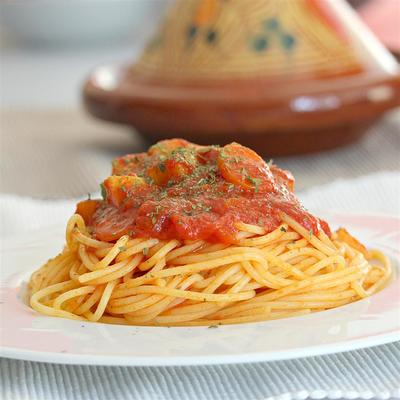

Beef Enchiladas with Spicy Red Sauce

Ground beef enchiladas in flour tortillas topped with spicy red sauce, cheese and fresh cilantro. So flavorful! Takes time and effort, but well worth it! Serve with Mexican rice and beans for a complete Mexican meal.
see receipePotato Latkes I
A classic potato latke, you can't go wrong with these crispy hot cakes. Serve with applesauce, sour cream and chopped green onions! Happy Hanukkah!
see receipeSomali Spaghetti Sauce
This is Somali-style spaghetti sauce with my own little twist. We make this once a week in our house (my daughter craves it!). I hope you enjoy this as much as we do!
see receipe